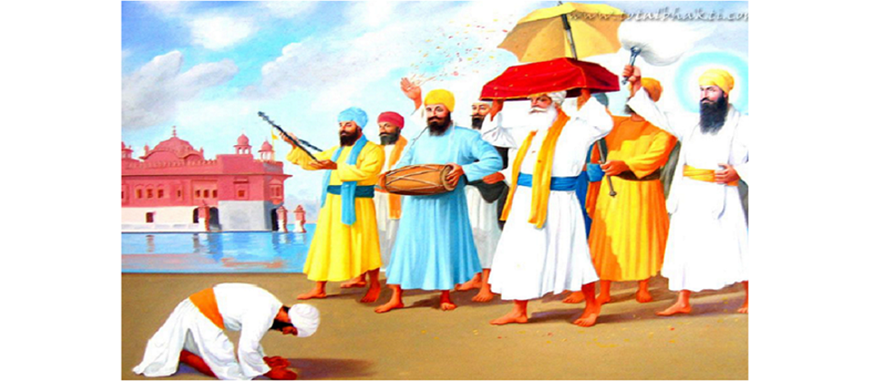
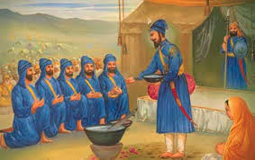

Sikhism


 s
s- 
sSikhism, the youngest of the world religions, is barely five hundred years old. Its founder, Guru Nanak, was born in 1469. Guru Nanak spread a simple message of "Ek Ong Kar": we are all one, created by the One Creator of all Creation. This was at a time when India was being torn apart by castes, sectarianism, religious factions, and fanaticism. He aligned with no religion, and respected all religions. He expressed the reality that there is one God and many paths, and the Name of God is Truth, "Sat Nam".
Guru Nanak's Hindu and Muslim followers began to be called Sikhs (learners). He taught them to bow only before God, and to link themselves to the Guru, the Light of Truth, who lives always in direct consciousness of God, experiencing no separation. Through words and example, the Guru demonstrates to followers how to experience God within themselves, bringing them from darkness into light. Guru Nanak was a humble bearer of this Light of Truth. He opposed superstition, rituals, social inequality and injustice, renunciation and hypocrisy and inspired seekers by singing divine songs which touched the hearts of the most callous listeners. These songs were recorded, and formed the beginnings of the Sikhs' sacred writings, later to become the "Siri Guru Granth Sahib".
 Amrit Sanchar (also called Khande di Pahul and Amrit Sanchar) is the Sikh ceremony of initiation or baptism. The Amrit Sanchar is the initiation rite introduced by Guru Gobind Singh when he founded the Khalsa in 1699.A Sikh who has been initiated into the Khalsa is titled Singh (males) or Kaur (females) and commonly referred to as "Amritdhari". A Sikh can go through this initiation at any age.
Read More{kind=link}